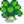
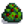
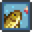
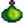

Habilidades
| Guía de Inicio |
El Jugador | Opciones | Controles | Controles Móviles |
Salud | Energía | Habilidades | Ciclo Diario |
Las habilidades son atributos del jugador que aumentan de nivel mediante el uso de herramientas o acciones específicas. Cada habilidad tiene diez niveles. Un aumento de nivel de habilidad se otorga inmediatamente al ganar suficientes puntos de experiencia para un nuevo nivel, y se muestra inmediatamente en la pestaña de habilidades del inventario. El nuevo nivel de habilidad aumenta inmediatamente la destreza de la(s) herramienta(s) asociada(s) a esa habilidad.
Durante la noche, después de que el jugador se acueste en el día en que un nivel de habilidad aumenta, una ventana emergente anuncia el aumento, y además otorga el conocimiento de cualquier receta de artesanía o de cocina aplicable. En el nivel 5 y en el nivel 10, los jugadores también eligen en cuál de las dos profesiones disponibles se van a especializar. Cada profesión tiene sus propios beneficios, como las bonificaciones en el precio de venta de los objetos relacionados. Hay que tener en cuenta que las recompensas de los conocimientos de las recetas o los beneficios de las profesiones no tienen lugar hasta que se ven en la ventana emergente durante la noche, y no están disponibles hasta la primera hora de la mañana siguiente. En particular, los objetos vendidos o enviados el día del aumento del nivel de habilidad no reciben las nuevas bonificaciones de precio. Al igual que las recetas, las ventajas de la profesión sólo están disponibles a partir del día siguiente.
Todas las habilidades necesitan los siguientes puntos de experiencia para aumentar de nivel:
|
|
Una variedad de habilidades se puede mejorar temporalmente por el consumo de comida específica. Estas habilidades van a aparecer como un icono de efecto positivo al lado del reloj en la interfaz del usuario. Las habilidades se pueden ver en la ficha de la habilidad del jugador en el menú de pausa del juego.
| Los niveles se obtienen cosechando cultivos y cuidando animales. Cada nivel otorga una destreza de +1 en la azada y la regadera (ver herramientas). | |
| La habilidad de minería aumenta al romper rocas (Normalmente usando un Pico). Cada nivel aumenta en +1 la eficiencia del pico. | |
| La habilidad de Recolección incluye tanto objetos recolectados, como madera talada con un hacha. Cada nivel aumenta en +1 la eficiencia de la hacha. | |
| La pesca está asociada con finalizar exitosamente el minijuego de pesca o a la captura de peces en una Trampa para cangrejos, Cada nivel aumenta en +1 la eficiencia de la caña de pescar. | |
| Combate es una habilidad vinculada a la habilidad del jugador de combatir contra monstruos. |
Eficiencia
La eficiencia en las habilidades afecta a la cantidad de energía usada al utilizar ciertas Herramientas.
En el nivel de habilidad 0, cada uso exitoso de un Pico, Hacha o Azada cuesta 2 de energía. Los usos fallidos (por ejemplo, intentar cortar un Tronco grande con el hacha inicial) cuestan 1 energía. Cada caña de pescar usa 8 de energía, incluso si el uso falla (por ejemplo, la línea de pesca no aterriza en el agua). La regadera básica utiliza 2 puntos de energía.
Cada aumento en la habilidad reduce los requisitos de energía en 0,1 puntos para herramientas específicas (enumeradas a continuación). Los aumentos de habilidad más allá del nivel 10 (solo es posible temporalmente a través de Bonificadores) continúan disminuyendo los requisitos de energía. Entonces, por ejemplo, usar un pico en el nivel de minería 13 cuesta solo 0.7 puntos por golpe. (El juego realiza un seguimiento de las cantidades fraccionarias de energía, pero en la interfaz de usuario se redondean al número entero más cercano).
Recargar una regadera mejorada aumenta su costo de energía en 2 puntos por carga; cada aumento en la habilidad reduce el requerimiento de energía en 0.1 puntos (independientemente del nivel de potencia). En el nivel agrícola 0, el principiante puede usar 2 de energía para regar una casilla; la regadera de iridio a máxima potencia utiliza 10 de energía para regar dieciocho casillas. En el nivel de agricultura 10, la regadera inicial utiliza 1 energía; el iridio a máxima potencia utiliza 9 de energía (10 menos 0,1 por nivel de habilidad). Usar una regadera mejorada para regar menos casillas de las que puede cuesta la misma energía que la primera actualización de la regadera puede regar esa cantidad de casillas (una sola casilla siempre es la misma que la regadera inicial, 5 casillas siempre lo mismo que la regadera de acero). Intentar usar una regadera vacía no cuesta energía. Llenar una regadera nunca consume energía.
Mejorar un Hacha, un Pico o una Azada no altera la cantidad de energía necesaria para usarlo. Sin embargo, la mayor eficiencia del Hacha, el Pico o la Azada dará como resultado que se utilice menos energía en general para la misma tarea que una herramienta de nivel inferior.
Tenga en cuenta que todas las azadas usan la misma cantidad de energía (2 puntos en el Nivel 0 de Agricultura y 1 punto en el Nivel 10 de Agricultura), ya sea que estén recargadas o que se usen para cultivar una casilla de tierra.
Todas las cañas de pescar usan la misma energía: 8 puntos en el Nivel 0 de Pesca, y 7 puntos en el Nivel 10 de Pesca.
Herramientas con eficienciaAgricultura Recolección Pesca Minería |
Herramientas sin eficienciaLas siguientes herramientas no consumen energía: Las siguientes herramientas consumen 4 puntos de energía: |
Ni rellenar una trampa para cangrejos con cebo ni recogerlo consume energía, en cualquier nivel de habilidad.
 Agricultura
Agricultura
- Véase también: Agricultura
La Habilidad de Agricultura aumenta al cosechar Cultivos. Cuidar a los animales también proporciona experiencia. Acariciar, ordeñar y esquilar animales de granja o recoger productos animales que estén dentro de los corrales y establos da 5 puntos de experiencia. La guadaña y la regadera no dan experiencia por usarlas. Cada nivel aumenta +1 la Eficiencia de la Guadaña y la Regadera.
| Nivel 1 | Nivel 2 | Nivel 3 | Nivel 4 | Nivel 5 | |
|---|---|---|---|---|---|
| Permite fabricar: | Permite fabricar: | Permite fabricar / cocinar: | Permite fabricar: | Elige una profesión | |
|
(La bonificación se aplica a todos los Vegetales y Flores, además de cualquier Fruta que no haya sido recolectada) | ||||
| Nivel 6 | Nivel 7 | Nivel 8 | Nivel 9 | Nivel 10 | |
| Permite fabricar: | Permite fabricar: | Permite fabricar: | Permite fabricar: | Ranchero: | Labrador: |
(También mejora la calidad de los productos del corral, ver detalles aquí) |
| ||||
(También mejora la calidad de los productos del establo, ver detalles aquí) |
 Agricultor
| ||||
 Minería
Minería
- Véase también: Minería
La Habilidad de Minería aumenta al usar el Pico para romper rocas. Cada nivel aumenta +1 la Eficiencia con el pico. Recibes puntos de habilidad de minería cuando se destruyen rocas -- no importa si esto se hace con el pico, las bombas o por la acción de los monstruos.
Los distintos tipos de roca dan diferentes cantidades de puntos de experiencia.
| Nivel 1 | Nivel 2 | Nivel 3 | Nivel 4 | Nivel 5 | |
|---|---|---|---|---|---|
| Permite fabricar: | Permite fabricar: | Permite fabricar: | Permite fabricar: | Elige una profesión: | |
|
| ||||
| Nivel 6 | Nivel 7 | Nivel 8 | Nivel 9 | Nivel 10 | |
| Permite fabricar: | Permite fabricar: | Permite fabricar: | Permite fabricar: | Minero: | Geólogo: |
|
| ||||
|
| ||||
 Recolección
Recolección
- Véase también: Recolección
La Habilidad de Recolección aumenta al recoger recursos silvestres que se encuentran en el suelo por todo Stardew Valley o talando madera de los árboles con el Hacha. Cada nivel aumenta +1 la Eficiencia del hacha.
| Nivel 1 | Nivel 2 | Nivel 3 | Nivel 4 | Nivel 5 | |
|---|---|---|---|---|---|
| Permite fabricar: | Permite fabricar: | Permite fabricar: | Permite fabricar: | Elige una profesión: | |
|
|
|
 Recolector
| ||
| Nivel 6 | Nivel 7 | Nivel 8 | Nivel 9 | Nivel 10 | |
| Permite fabricar: | Permite fabricar: | Permite fabricar: | Permite fabricar: | Guardabosques: | Recolector: |
|
|
|
| ||
|
| ||||
Puntos de Experiencia
Los puntos de experiencia (XP) se otorgan de las siguientes maneras:
- 12 XP por talar un árbol con un hacha (otorgado de una sola vez por el último corte que provoca la caída del árbol).
- 1 XP por retirar el tocón después de talar un árbol.
- 1 XP por cada trozo de Musgo cosechado de los árboles.
- 1 XP por baya, Moras y Frambuesas cosechada de los arbustos en sus respectivas estaciones.
- 25 XP por talar Tocones grandes y Troncos grandes.
- 7 XP por cada objeto recogido del suelo.
- Si la profesión Recolector duplica el objeto recolectado, otros 7 XP serán otorgados por el objeto duplicado.
- 3 XP por recolectar cebolletas en el Bosque Tizón en Primavera.
- 2 XP por objetos crecidos a partir de Semillas variadas (Excepto en una Maceta, en este caso 0 XP).
Los 7 XP por buscar objetos se aplican únicamente a aquellos objetos visibles en el suelo que se recogen sólo si el jugador hace clic sobre ellos; no se aplica a los objetos que están en el suelo (por ejemplo, los que se dejan caer al sacudirlos) y que se añaden automáticamente al inventario del jugador por magnetismo. Los objetos específicos que sí otorgan 7 XP son:
- Objetos de recolección estándar aparecidos aleatoriamente en todo Stardew Valley y el Desierto de Calico.
- Todos los objetos recolectados en La playa y la sección oeste de la Isla Jengibre.
- Todas las frutas recolectadas en La Cueva, si la opción de murciélagos de la fruta fue elegido.
- Todos los hongos recolectados en la Cueva de Hongos de la Isla Jengibre.
- Trufas.
- Los artículos de recolección que aparecen en el suelo en Las minas o en la Caverna Calavera, a saber Seta roja, Seta lila y Helecho.
Los siguientes objetos NO otorgan ninguna experiencia de Recolección:
- Árboles derribados por Bombas (sin embargo, debilitar un árbol con bombas antes de derribarlo con un hacha seguirá dando toda la XP).
- Moras y Frambuesas de arbustos (ya sea recogido por el jugador o sacudido por los animales).
- Uvas crecidas de Kit de uvas. (En cambio, otorga experiencia de Agricultura).
- Artículos desenterrados de los lugares de artefactos, como Ñame nival y Raíz invernal.
- Artículos crecidos en macetas.
- Setas recolectadas en La Cueva si la opción de setas fue elegida.
- Setas obtenidas de talar o usar una Resinera en un Árbol seta.
- Los objetos no recolectables que aparecen en el suelo en Las minas y la Caverna Calavera, tales como el Cuarzo, Cristal terrestre, Lágrima helada, Cuarzo de fuego y Huevo de dinosaurio -- Excepto por un error que hace que los duplicados creados por la profesión de Recolector den 7 XP.
- Artículos recolectables conseguidos por matar Monstruos.
- Jengibres excavados en la superficie.
 Pesca
- Véase también: Pesca
La Habilidad de Pesca aumenta al pescar Pescados, Basura, Alga verde o Alga blanca con la caña de pescar o al recogerlos en las Trampas para cangrejos.
Cada nivel aumenta +1 la Eficiencia de la Caña de Pescar, aumenta el tamaño mínimo de los peces (en cm) y la altura de la barra de pesca, y disminuye el tiempo máximo antes de que piquen los peces. También aumenta la probabilidad de conseguir peces de calidad plata u oro.
| Nivel 1 | Nivel 2 | Nivel 3 | Nivel 4 | Level 5 | |
|---|---|---|---|---|---|
| Ventajas: | Permite fabricar: | Permite fabricar / cocinar: | Permite fabricar: | Elige una profesión: | |
| Alcance de caña aumentado en una casilla. |
|
|
|
|
|
| Nivel 6 | Nivel 7 | Nivel 8 | Nivel 9 | Level 10 | |
| Permite fabricar: | Permite fabricar: | Permite fabricar: | Permite fabricar: | Pescador: | Trampero: |
|
|
|
|
|
|
|
| ||||
 Combate
Combate
- Véase también: Combate
La Habilidad de Combate aumentar al matar monstruos. Algunos niveles aumentan los puntos de salud del jugador, y la barra de salud aumenta de tamaño.
| Nivel 1 | Nivel 2 | Nivel 3 | Nivel 4 | Nivel 5 | |
|---|---|---|---|---|---|
| Permite fabricar: | Permite fabricar: | Permite cocinar: | Permite fabricar: | Choose a Profession: | |
|
(Nótese que el aumento es multiplicativo. La fórmula es: critChance = critChance * 1.5) | ||||
| Nivel 6 | Nivel 7 | Nivel 8 | Nivel 9 | Nivel 10 | |
| Permite fabricar: | Permite fabricar: | Permite fabricar: | Permite fabricar: | Luchador: | Explorador: |
|  Aceite de ajo |
(El efecto se multiplica con Luchador) |
| |||
|
(2x Daño por golpe crítico) | ||||
Cambio de profesiones

La Estatua de la Incertidumbre en Las cloacas le permite al jugador cambiar profesiones. Después de donar  10 000o, la estatua requiere que el jugador elija una habilidad para cambiar. Esa noche, después de que el jugador se va a la cama, aparecerá la pantalla del nivel 5 "Elige una profesión", seguida de la pantalla correspondiente al nivel 10 "Elige una profesión" para la habilidad seleccionada en la estatua.
10 000o, la estatua requiere que el jugador elija una habilidad para cambiar. Esa noche, después de que el jugador se va a la cama, aparecerá la pantalla del nivel 5 "Elige una profesión", seguida de la pantalla correspondiente al nivel 10 "Elige una profesión" para la habilidad seleccionada en la estatua.
En el menú de la estatua sólo aparecerán las habilidades para las que ya se han elegido profesiones. En cuanto el jugador elija una profesión para cambiar, las bonificaciones de las profesiones existentes desaparecerán. Las habilidades que dan bonificaciones a los precios de venta no se aplicarán a los artículos colocados en el depósito de envío el día que cambies de profesión.
Al igual que subir de nivel una habilidad al final del día hace que el jugador se despierte con toda la energía al día siguiente sin importar nada más, usar esta estatua cualquier día hará que el jugador también se despierte con toda la energía al día siguiente.
Título basado en las habilidades
Está basado en el nivel total de tus habilidades. Obtienes un cierto título debajo de tu nombre, en la pestaña de habilidades del menú del jugador. Tu nivel y título también son visibles cuando pasas el cursor sobre tu retrato en la pestaña inventario del menú.
El nivel es calculado de la siguiente manera: (NivelAgricultura + NivelPesca + NivelRecolección + NivelCombate + NivelMinería + NivelSuerte) / 2
Si el número resultante termina en 0,5, el valor decimal se trunca y sólo se considera la parte entera.
Estos son los posibles títulos que se pueden obtener:
- Nivel ≥ 30: Rey granjero
- Nivel > 28: As granjero
- Nivel > 26: Agricultor
- Nivel > 24: Granjero
- Nivel > 22: Ranchero
- Nivel > 20: Sembrador
- Nivel > 18: Cultivador
- Nivel > 16: Granjero/Granjera
- Nivel > 14: Excavador
- Nivel > 12: Agricultor
- Nivel > 10: Labrador
- Nivel > 8: Peón
- Nivel > 6: Vaquero
- Nivel > 4: Patán
- Nivel > 2: Novato
- Nivel ≤ 2: Principiante
Necesitas tener tu Suerte al nivel 10, como también nivel 10 para el resto habilidades para obtener el título más alto, Rey granjero. Desafortunadamente, el nivel de la suerte (un valor separado de la suerte diaria) no está implementado en el juego en la v1.5 de la PC. El nivel de suerte parece que (en el código del juego) tiene como propósito ser una la sexta habilidad que podría subir de nivel, como las otras habilidades. Esto significa que el máximo nivel posible es 25, lo que convierte a "Granjero" en el mejor título obtenible.
Maestría
Una vez que el jugador ha alcanzado el nivel máximo en todas sus habilidades, puede abrir una puerta en el Bosque Tizón para ingresar a la Cueva de la Maestría. Aquí, los jugadores pueden usar su experiencia adicional para subir de nivel su nivel de maestría, que luego pueden usar para dominar las cinco habilidades, desbloqueando diferentes ventajas.
Contenido no utilizado
En el código del juego se hace referencia a un sistema de puntos de habilidad no utilizado. El sistema parece permitir al jugador acumular y gastar puntos de habilidad.
Según el código no utilizado, habría que pasar por 36 aumentos de puntos de habilidad, que se basaban en una combinación del nivel de habilidad del jugador y la cantidad acumulada de dinero que había ganado. No se indica en qué se gastarían los puntos.[1]
Referencias
- ↑ Consulta Farmer::checkForLevelUp en el código del juego.
Historial
- 1.3.27: Agregada la Estatua de la Incertidumbre. Quitar un tocón de árbol normal da ahora +1 de experiencia de recolección.
- 1.4: Corregida la profesión de Buscador que no se aplicaba a las rocas destruidas en las minas.
- 1.4.1: Los bonos de profesión ahora desaparecen en cuanto se elige una profesión para cambiar en la Estatua de la Incertidumbre. En el menú de la Estatua solo se muestran las habilidades que ya han elegido profesión.
| Habilidades y Estadísticas | |
|---|---|
| Habilidades | Agricultura • Combate • Minería • Pesca • Recolección |
| Estadísticas | Ataque • Daño crítico • Defensa • Golpe crítico • Inmunidad • Magnetismo • Peso • Suerte • Velocidad |